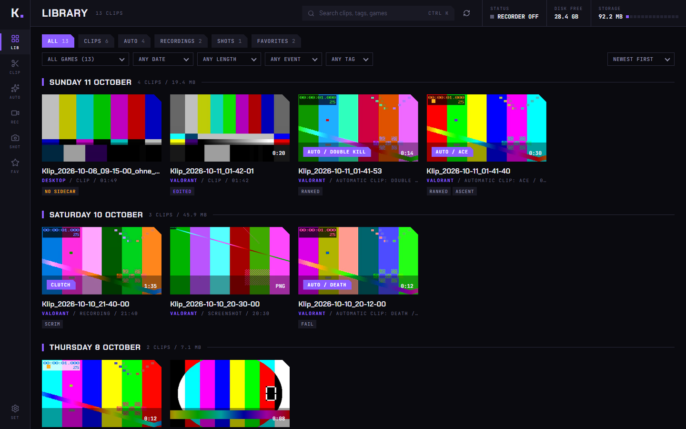
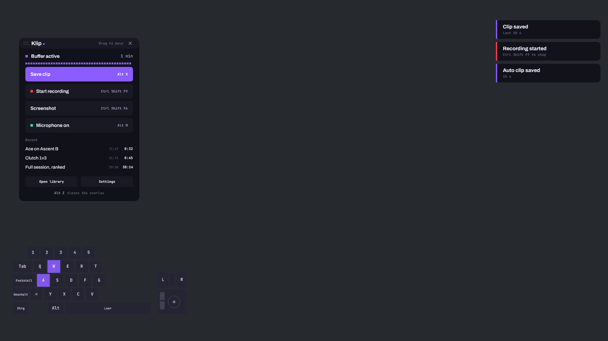

01 / Buffer
Replay buffer
Keeps the last seconds as encoded video in memory. Saving takes a fraction of a second, because nothing is encoded again.
Windows 10 and 11 / beta / no account needed
Klip buffers your game in the background on the GPU and saves what just happened on a key press. Every audio source lands on its own track, so you decide in the editor whether Discord or music belongs in the clip.
Library / test data

Two programs: a small recorder in the tray that costs next to nothing, and an app for library and editing that only runs when you open it.
01 / Buffer
Keeps the last seconds as encoded video in memory. Saving takes a fraction of a second, because nothing is encoded again.
02 / GPU
Uses the encoder of the graphics driver. Frames stay on the GPU from capture to encoder, including downscaling.
03 / Auto
Detects kills, deaths and round ends in the captured picture and saves the clip by itself. The library shows the reason.
04 / Edit
Trim, delete segments, mute tracks. Your cuts live in a file next to the clip, the original stays untouched.
05 / Input
Keys and mouse clicks are stored next to the video, not burned into the picture. Whether they show in the clip is decided at export.
06 / Export
MP4, WebM, MKV, GIF, MP3 or WAV, fitted into 10 MB if you want. A clip that was only trimmed is exported without re-encoding.
07 / Desktop
The buffer runs on the desktop too. If you want nothing of your desktop in it, switch to "only in games".
08 / Monitors
The main monitor by default. Another one, the monitor of the game, or all of them side by side in one picture are one setting away.
09 / Webcam
The camera sits as a file of its own next to the clip. Pick corner and size in the editor, or leave it out.
Every program that plays sound gets a track of its own in the same MP4, found by itself. Track 1 is always the finished mix, so any player plays the right thing.


Built for games with kernel anti-cheat. Every unknown game counts as protected. I play Valorant myself, and a ban caused by my own clip tool would be the worst possible outcome.
No anti-cheat vendor has reviewed or approved Klip. Detected events are never shown during a match, the only visible effect is the notice that a clip was saved.
Every key can be changed. Klip tells you when a combination is already taken by another program.
Optional and off until you turn it on. Sign in with Discord and Klip uploads clips to a server you run yourself. On your phone, open the same address, sign in with the same Discord account and everything is there. No app needed.
The server is in the repo under cloud/ and runs on Node 22 without other packages. With "cloud only" the file on the PC goes to the recycle bin only after a confirmed upload, never deleted for good.
Capture, encoding in three codecs, buffer, clips, recordings, screenshots, separate audio tracks, tray, library, editor, export, the setup program.
Starting and stopping the buffer by a game, the overlay on top of a fullscreen game, auto clips on live Valorant picture, a real webcam. The detector found six of six events in three real clips, which is too little footage for a hit rate.
A finished download, software encoding as a fallback, editable per game profiles, more games for auto clips, a measurement of the frame rate in a game.
Build it yourself
git clone https://github.com/ImKirit/Klip cd Klip/app && npm install && cd .. powershell -ExecutionPolicy Bypass -File scripts\stage.ps1
You need Rust (MSVC), Node.js and the WebView2 runtime. The result is a setup that installs per user, without admin rights.